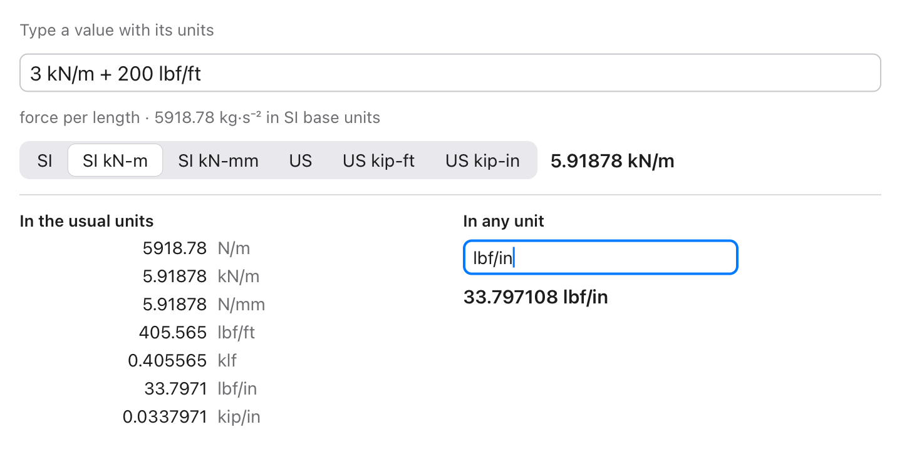

Reads what people type
Feet and inches, fractions, sums of different units, and plain numbers in the field's own unit. The answer comes in the unit your field is in.
let mm = try units.read("5' 6 1/4\"", unit: "mm") // 1682.75
let w = try units.read("3 kN/m + 200 lbf/ft", unit: "kN/m")